Overview Video
Demo comparing the teacher and the student methods showcasing examples where the teacher is faster, where the student is faster and when the teacher fails to do the task.
Motivation and Contribution
Challenge: Classical IBVS methods suffer from numerical instabilities and singularities, while marker-based approaches (ArUco, AprilTags) limit deployment in dynamic indoor environments. GPS-denied scenarios demand efficient, marker-free visual servoing for quadrotor control.
Our Solution: We present a self-supervised neuro-analytical framework featuring a Numerically Stable Efficient and Reduced (NSER) Image-Based Visual Servoing (IBVS) teacher model, distilled into a lightweight 1.7M parameter student network achieving 11x real-time performance with improved control accuracy.
Key Contributions
- Stable analytical teacher: Improved IBVS controller solving numerical instabilities through reduced classical equations, enabling robust marker-free control.
- Two-stage segmentation: YOLOv11 + U-Net mask splitter for anterior-posterior vehicle segmentation, accurately estimating target orientation.
- Efficient knowledge distillation: Dual-path system transferring geometric visual servoing from teacher to compact student neural network that outperforms the teacher while suitable for onboard deployment.
- Practical sim-to-real transfer: Digital-twin training with real-world fine-tuning, validated in GPS-denied indoor environments with minimal hardware.
Visual Performance for Teacher
Visual Performance for Student
Our Approach
We propose a Teacher-Student architecture to combine the stability of analytical methods with the efficiency of neural networks. The Teacher (NSER-IBVS) uses a numerically stable analytic control law to generate robust velocity commands. The Student, a lightweight CNN, learns to regress these commands directly from raw images, bypassing the expensive feature extraction pipeline.
1. Knowledge Distillation & Self-Supervised Learning Pipeline
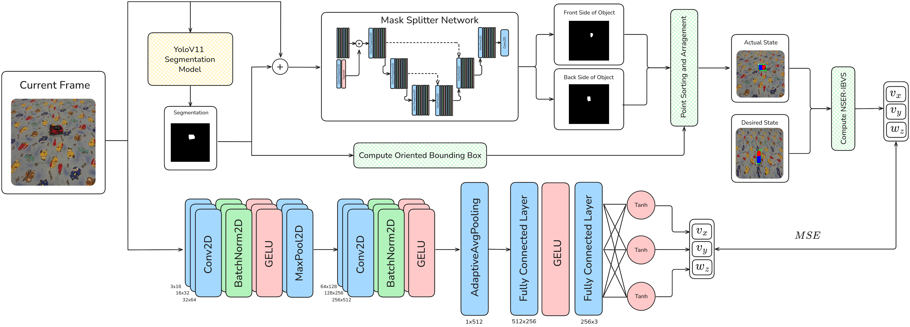
2. Numerically Stable IBVS Teacher (NSER)
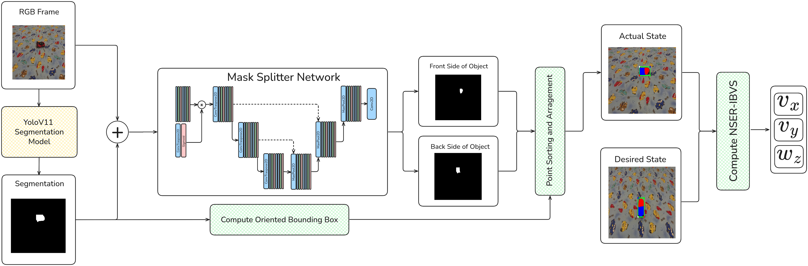
3. Two-Stage Target Segmentation
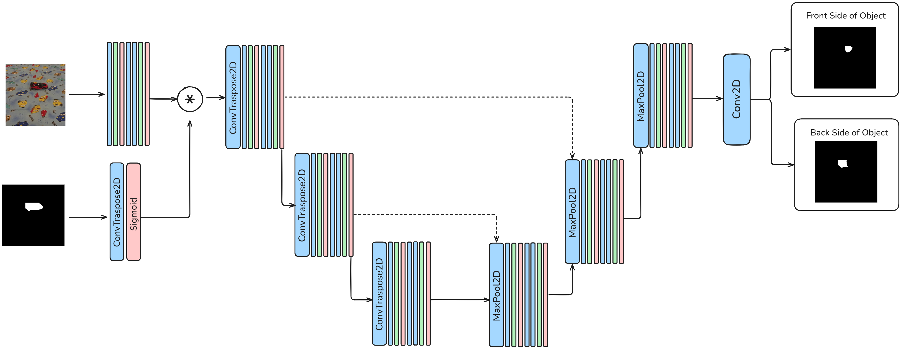
Why Mask Splitting Matters: Solving Keypoint Ordering
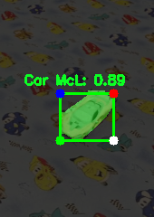
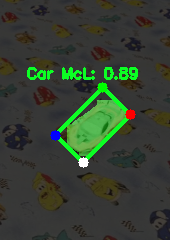
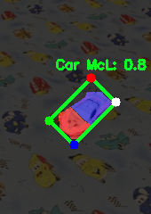
Standard bounding box approaches suffer from keypoint ordering ambiguity, the four corners can be assigned inconsistently across frames, destabilizing the IBVS control loop. Our mask splitter determines which part of the vehicle is front vs. back, enabling consistent clockwise ordering of keypoints for stable visual servoing.
4. Student Neural Network
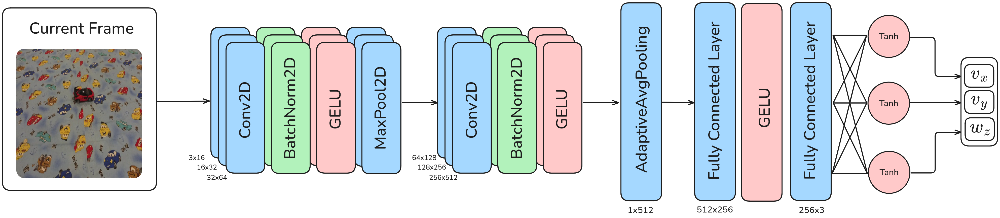
Goal State Reference
The IBVS controller computes velocity commands by comparing current keypoints to a reference (goal) configuration. Below are the reference images used for real-world and simulated environments:
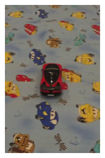
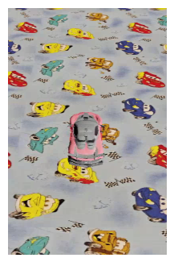
This integrated approach combines the robustness of analytical control theory with the efficiency and adaptability of neural networks, enabling practical deployment on resource-constrained aerial platforms.
Experimental Setup
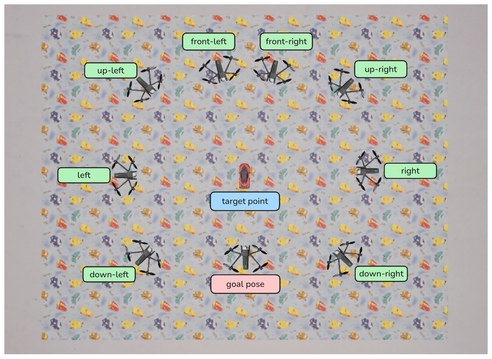
Evaluation Framework: High-fidelity digital twin simulator + real-world indoor GPS-denied flights
Evaluation Metrics
- Flight performance: Distance, time
- Control accuracy: Final norm error (px)
- Tracking quality: IoU (last 3s)
- Efficiency: Inference time, FPS
Teacher: Numerically stable IBVS
Student: 1.7M ConvNet (11x faster)
Digital Twin Generation
Our simulation environment addresses the Sim-to-Real gap using a high-fidelity pipeline:
- Physics Engine: Parrot Sphinx for accurate aerodynamic modeling.
- Rendering: Unreal Engine 4 for photorealistic visual feedback.
- Assets: Custom .FBX vehicle and environment assets matching real-world measurements.
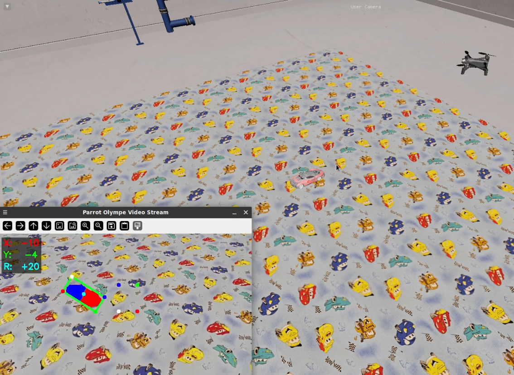
Hardware Requirements
- Simulation: Ubuntu 22.04/24.04, NVIDIA GPU (CUDA), 8GB+ RAM
- Real-World: Parrot Anafi 4K, laptop with WiFi + GPU
- Environment: Indoor with Lambertian floor surface
Mission Termination
- Hard Goal: Median error < 40px for 3 consecutive seconds
- Soft Goal: Median error < 80px AND all velocities = 0 for 3s
- Timeout: 75 seconds maximum flight duration
Pre-trained Models
All models are available in the code repository.
| Model | Params | Description |
|---|---|---|
| YOLOv11n Segmentation | 2.84M | Vehicle segmentation (sim / real) |
| Mask Splitter (U-Net) | 1.94M | Anterior-posterior splitting (sim / real) |
| Student Network | 1.7M | Direct velocity regression (sim-pretrained + real fine-tuned) |
Visual Results
Control command and error evolutions over time

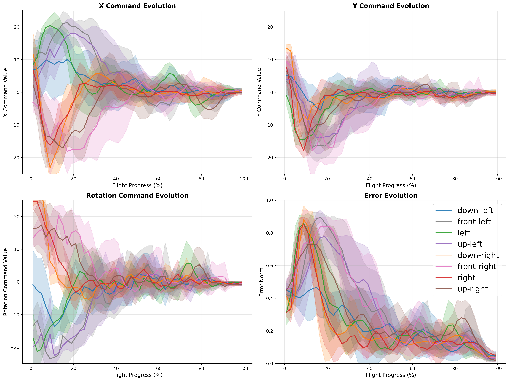


Temporal Evolution of Control. Comparison of control commands and error evolution on novel test sequences across 8 different starting points. Top Row: Real-world flights. Bottom Row: Simulation. Solid lines represent mean values; shaded areas indicate variability across runs. All control commands and errors converge toward zero, indicating robust trajectory tracking. Note the striking similarity in control behavior between the complex analytical Teacher (1 and 3) and the lightweight Student ConvNet (2 and 4) in both domains, validating our Sim-to-Real transfer pipeline.
Command Distribution Comparison
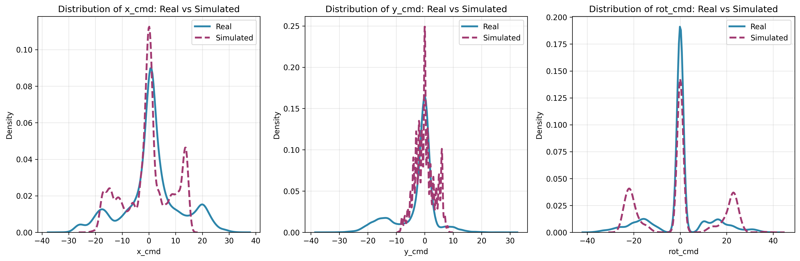
Sim-to-Real Domain Alignment. Aggregated probability density functions of control commands (linear velocities x, y and angular yaw rate rot) across all experiments. The strong overlap between the Real-World and Digital-Twin distributions validates the fidelity of our simulation environment.
Trajectory Analysis
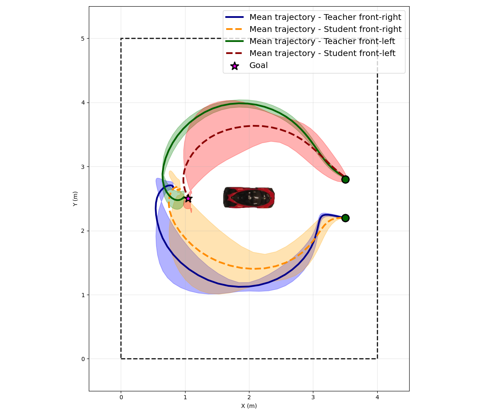
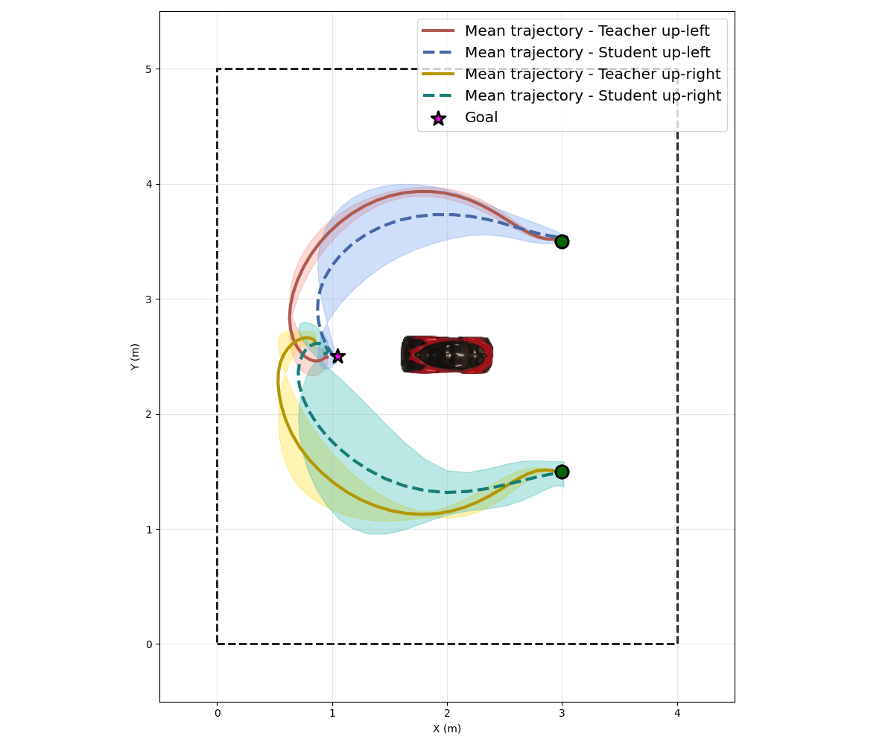
2D Flight Trajectories. Trajectories of teacher and student simulation flights with mean and standard deviation across 4 starting poses. Left: Front approaches. Right: Up approaches. Green circles indicate starting points, the Star represents the goal pose. Lines represent mean trajectory over the experiments where Solid Lines = Teacher NSER IBVS and Dashed Lines = Student. Shaded regions indicate trajectory variability across runs. Note that while the Student displays slightly more path variation, it frequently achieves a shorter average path to the target than the analytical Teacher.
Numeric Results
| Direction | Flight SIM | Flight | ||||
|---|---|---|---|---|---|---|
| Distance (m) / Time (s) ↓ | Norm Error SIM (px) ↓ | IoU SIM ↑ | Distance (m) / Time (s) ↓ | Norm Error (px) ↓ | IoU ↑ | |
| Up-Left | 5.312 / 23.466 | 29.256 | 0.530 | 5.798 / 36.721 | 30.134 | 0.620 |
| 5.193 / 24.164 | 13.319 | 0.759 | 5.735 / 43.334 | 28.600 | 0.6263 | |
| Up-Right | 5.675 / 24.226 | 31.800 | 0.503 | 5.622 / 41.581 | 31.499 | 0.621 |
| 6.064 / 28.298 | 13.172 | 0.766 | 5.716 / 45.885 | 22.802 | 0.6919 | |
| Front-Left | 6.196 / 27.315 | 30.706 | 0.517 | 6.493 / 37.535 | 28.540 | 0.611 |
| 6.041 / 27.917 | 13.430 | 0.758 | 6.490 / 47.238 | 33.981 | 0.560 | |
| Front-Right | 6.846 / 32.358 | 32.608 | 0.488 | 6.197 / 37.166 | 33.150 | 0.658 |
| 7.043 / 35.535 | 18.028 | 0.718 | 6.316 / 46.363 | 31.035 | 0.627 | |
| Left | 4.177 / 20.228 | 31.453 | 0.519 | 4.559 / 29.921 | 28.015 | 0.629 |
| 4.089 / 20.481 | 13.243 | 0.762 | 5.065 / 43.841 | 30.853 | 0.6482 | |
| Right | 4.317 / 19.637 | 31.137 | 0.494 | 4.831 / 41.409 | 32.423 | 0.612 |
| 4.518 / 21.987 | 13.798 | 0.759 | 4.811 / 57.245 | 43.672 | 0.500 | |
| Down-Left | 2.779 / 15.988 | 28.473 | 0.518 | 4.384 / 31.622 | 28.000 | 0.611 |
| 2.777 / 14.900 | 13.257 | 0.763 | 4.326 / 41.044 | 39.531 | 0.5253 | |
| Down-Right | 2.893 / 13.667 | 22.618 | 0.606 | 4.137 / 33.523 | 27.890 | 0.654 |
| 3.145 / 17.035 | 15.839 | 0.728 | 3.938 / 38.001 | 36.195 | 0.5478 | |
| Mean | 4.774 / 22.111 | 29.756 | 0.522 | 5.253 / 36.185 | 29.956 | 0.627 |
| 4.859 / 23.790 | 14.261 | 0.752 | 5.300 / 45.369 | 33.334 | 0.591 | |
Table 1. Teacher-student comparison across different starting positions. The left side shows results in the simulator; the right side shows results on flights in the real world. Metrics include total flight distance/time, final norm error in pixels (L2 norm of the error vector for all 4 corner points combined), and final IoU (L2 norm and IOU are computed in the last 3 secs of the flight). The teacher is slightly faster in flight time. Student is 11 faster in computation time (see Tab. 2). The student is slightly more accurate (lower errors at destination than the teacher) in simulation, where it was trained more, but it is slightly less accurate in real-world, where it was trained on far fewer flights.
Inference Time Analysis
| Evaluator | Avg | Std | Med | Min | Max | FPS |
|---|---|---|---|---|---|---|
| NSER IBVS | 20.69 | 7.63 | 24.56 | 6.45 | 82.55 | 48.30 |
| Student | 1.85 | 0.93 | 1.84 | 1.79 | 235.64 | 540.8 |
Table 2. Computation times (in milliseconds) over 30 trials. The small 1.7M params student ConvNet is 11x faster than the teacher.
Contact
For questions and collaboration inquiries, please contact the authors through the GitHub repository or academic channels.
Acknowledgements
This work is supported by projects "Romanian Hub for Artificial Intelligence - HRIA", Smart Growth, Digitization and Financial Instruments Program, 2021-2027 (MySMIS No. 334906), European Health and Digital Executive Agency (HADEA) through DIGITWIN4CIUE (Grant No. 101084054), and "European Lighthouse of AI for Sustainability - ELIAS", Horizon Europe program (Grant No. 101120237).
Citation
@InProceedings{Mocanu_2025_ICCV,
author = {Mocanu, Sebastian and Nae, Sebastian-Ion and Barbu, Mihai-Eugen and Leordeanu, Marius},
title = {Efficient Self-Supervised Neuro-Analytic Visual Servoing for Real-time Quadrotor Control},
booktitle = {Proceedings of the IEEE/CVF International Conference on Computer Vision (ICCV) Workshops},
month = {October},
year = {2025},
pages = {1744-1753}
}